Extended suites¶
The conformance suite is fixed by the paper. Scenarios written after it live in separate suites of bikeped.scenarios, so the published numbers stay reproducible while the library grows. This page describes the extended and stress suites and lists their scenarios.
Working with a suite¶
python -m bikeped.scenarios list --suite extended
python -m bikeped.scenarios evaluate --suite extended
from bikeped.scenarios import get_suite
for scenario in get_suite('extended'):
print(scenario['id'], scenario['family'], scenario['expected_dominant'])
Scenarios in these suites use the conformance format, so they run in the testbench, in the browser simulator and in the CARLA renderer without conversion. Per-agent model hints (child, wheelchair, e-scooter, cargo bike and so on) change only how the renderer draws an agent.
extended¶
Forty-one hand-designed urban conflicts and deliberate negatives in twelve families. Speeds follow published ranges: walking 1.2 to 1.5 m/s, older adults 0.8 to 1.0, wheelchairs 1.0 to 1.3, commuter cyclists 4 to 7, fast road cyclists 8 to 11, e-scooters 5 to 7, cargo bikes 3.5 to 5.5.
| Family | Scenarios | Covers |
|---|---|---|
turning |
4 | Turning conflicts |
occlusion |
3 | Occlusion and late emergence |
yielding |
4 | Yielding and braking cyclists |
counter-flow |
2 | Wrong-way and counter-flow riders |
shared-space |
2 | Shared space and sidewalk riding |
groups |
5 | Groups and platoons |
vulnerable |
4 | Vulnerable road users |
micromobility |
4 | Micromobility |
pedestrian-behaviour |
5 | Pedestrian behaviour |
near-miss |
4 | Near-miss geometry |
signal-platoon |
1 | Signal-phase platoons |
negative |
3 | True negatives |
The dominant state of a run is the most severe state (alert > warning > safe > idle) that the pipeline holds for at least 0.3 s in total over the run. expected_dominant of an extended or stress scenario is the same rule applied to the per-frame labels of compute_ground_truth_danger rather than a judgement, and a test in tests/scenarios/ keeps the two in agreement. Scenarios that the default pipeline gets wrong keep their label and carry the tag known-hard: either the dominant state differs from the expected one, or the first alert comes more than 0.5 s after a danger interval begins. Fourteen scenarios carry it across the library: seven false alarms, five late alerts and two in the stress suite. They are the useful ones when you change the pipeline.
The ground truth is conservative. It labels a comfortable yield, a 2 m tangential pass and the whole ±3 s time-gap sweep of the generators as danger, so a yes in the table below means the pipeline agrees with a cautious reference rather than with a human judgement of the scene.
$ python -m bikeped.scenarios evaluate --suite extended
scenario dur ag danger alert false lead s (per interval) dominant expected ok
--------------------------------------------------------------------------------------------------------------
right-hook-across-crosswalk 12.0 2 2.50 3.67 1.27 +1.3 alert alert yes
left-hook-across-crosswalk 10.6 2 2.63 3.47 0.83 +0.7 alert alert yes
turn-in-from-cross-street 9.4 2 3.83 3.33 0.00 -0.0 alert alert yes
wide-turn-clears-pedestrian 8.5 2 0.00 3.13 3.13 - alert warning NO
...
--------------------------------------------------------------------------------------------------------------
41 scenarios, dominant state matches expected in 34; 23 of 33 danger intervals alerted no later than one frame after onset; false-alert time 33.93 s
evaluate runs decision_testbench.simulate_scenario with ideal perception. The columns are seconds of ground-truth danger, of alert and of false alert, the lead of the first alert over each danger interval (negative means late), and the dominant state against the expected one.
| Scenario | Family | Expected | Duration | Agents | |
|---|---|---|---|---|---|
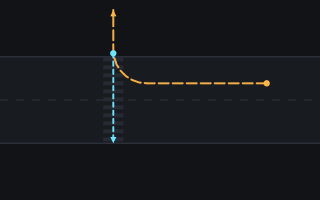 |
Right Hook Across Crosswalk right-hook-across-crosswalkA cyclist at 5 m/s turns right off the main road through the far end of the crosswalk, where a pedestrian has just stepped off the kerb. |
turning | alert | 12.0 s | 1 adult, 1 bicycle |
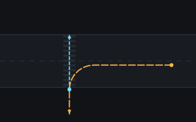 |
Left Hook Across Crosswalk left-hook-across-crosswalkA cyclist turns left across the oncoming lane and sweeps through the near half of the crosswalk while a pedestrian is walking out from that kerb. |
turning | alert | 10.6 s | 1 adult, 1 bicycle |
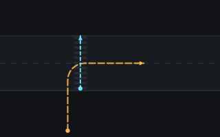 |
Turn In From Cross Street turn-in-from-cross-streetA cyclist comes up the cross street, turns right onto the main road and rides through the middle of the crosswalk as a pedestrian reaches it. |
turning | alert | 9.4 s | 1 adult, 1 bicycle |
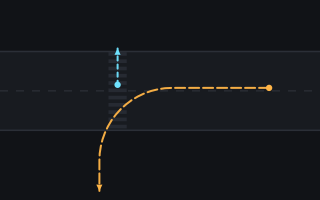 |
Wide Turn Clears Pedestrian wide-turn-clears-pedestrianA cyclist swings a wide left turn that stays more than 6 m from a pedestrian walking on the far half of the crosswalk. |
turning | warning | 8.5 s | 1 adult, 1 bicycle |
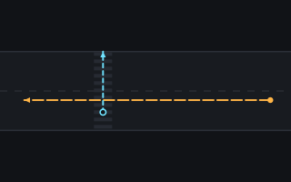 |
Steps Out From Behind Van steps-out-from-behind-vanA pedestrian hidden by a parked van is first detected stepping into the road 3.5 m from the kerb line, 1.5 s before a 6 m/s cyclist reaches the crossing point. |
occlusion | alert | 10.6 s | 1 adult, 1 bicycle |
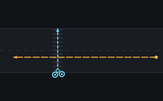 |
Bus Stop Crowd Emergence bus-stop-crowd-emergenceTwo people wait at a bus stop; a third steps out from behind them at a brisk 1.8 m/s straight into the path of a cyclist. |
occlusion | alert | 9.9 s | 3 adult, 1 bicycle |
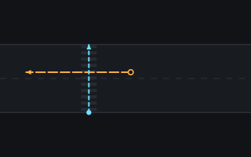 |
Cyclist Emerges From Behind Bus cyclist-emerges-from-behind-busA cyclist overtaking a stopped bus is first seen 8 m from the crosswalk at 6 m/s while a pedestrian is crossing in front of the bus. |
occlusion | alert | 9.8 s | 1 adult, 1 bicycle |
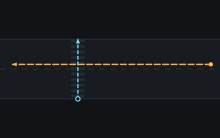 |
Cyclist Stops Before Crosswalk cyclist-stops-before-crosswalkA cyclist at 5.5 m/s brakes comfortably at 2 m/s^2 to a stop 4 m short of the crosswalk, waits for the pedestrian to clear, then rides on. |
yielding | alert | 16.2 s | 1 adult, 1 bicycle |
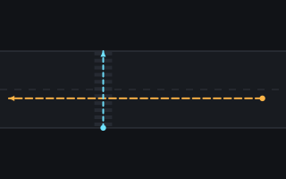 |
Rolling Yield rolling-yieldA cyclist slows from 6 m/s to 2 m/s and rolls through the crosswalk after the pedestrian has passed the bike lane. |
yielding | warning | 12.8 s | 1 adult, 1 bicycle |
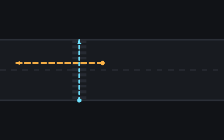 |
Track Stand Then Go track-stand-then-goA cyclist balances in place 5 m before the crosswalk while a pedestrian crosses, then sets off once the pedestrian is on the far side. |
yielding | warning | 14.7 s | 1 adult, 1 bicycle |
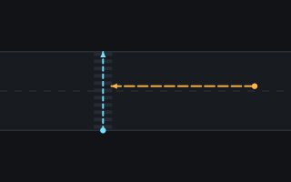 |
Late Hard Braking late-hard-brakingA cyclist at 6.5 m/s notices the pedestrian late and brakes hard at 5 m/s^2. The bike stops about a metre from them. |
yielding | alert | 9.8 s | 1 adult, 1 bicycle |
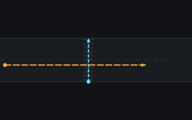 |
Wrong-Way Rider wrong-way-riderA cyclist rides against traffic towards +x at 5 m/s; the pedestrian checks the usual direction and steps out into the rider. |
counter-flow | alert | 9.8 s | 1 adult, 1 bicycle |
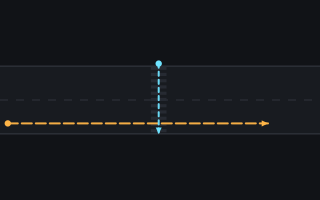 |
Contraflow Lane Pass contraflow-lane-passA wrong-way cyclist stays in the far contraflow lane and crosses the crosswalk well ahead of the pedestrian, who is still at the opposite kerb. |
counter-flow | warning | 13.9 s | 1 adult, 1 bicycle |
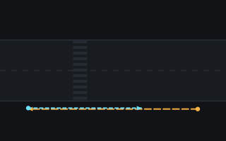 |
Sidewalk Rider Head-On sidewalk-rider-head-onA cyclist rides along the sidewalk at 4.5 m/s towards a pedestrian walking the other way on the same line. |
shared-space | alert | 17.6 s | 1 adult, 1 bicycle |
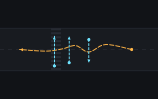 |
Shared Plaza Slalom shared-plaza-slalomIn a shared plaza a cyclist at 4 m/s weaves between two walkers and cuts close in front of a third. |
shared-space | alert | 9.4 s | 3 adult, 1 bicycle |
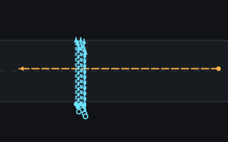 |
School Group Crossing school-group-crossingTwo adults walk a line of six children across at 1.0 m/s; a cyclist at 5 m/s reaches the crosswalk while the group is strung across the lane. |
groups | alert | 16.0 s | 2 adult, 6 child, 1 bicycle |
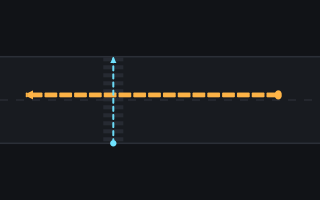 |
Cyclist Platoon cyclist-platoonFour commuters ride in single file 1.2 s apart at 5.5 m/s into a pedestrian who is halfway across. |
groups | alert | 11.0 s | 1 adult, 4 bicycle |
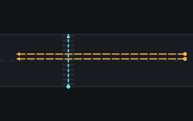 |
Two Abreast two-abreastTwo cyclists ride side by side at 6 m/s and fill the lane as a pedestrian crosses. |
groups | alert | 9.8 s | 1 adult, 2 bicycle |
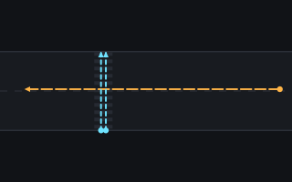 |
Pedestrian Couple pedestrian-coupleA couple walks across side by side at 1.3 m/s and a cyclist at 6 m/s rides through their line. |
groups | alert | 10.6 s | 2 adult, 1 bicycle |
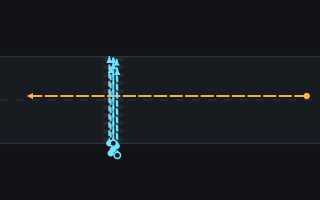 |
Crowd With Straggler crowd-with-stragglerFive people cross together and clear the lane; a straggler follows 3.5 s later and meets the cyclist the rest of the group avoided. |
groups | alert | 14.3 s | 6 adult, 1 bicycle |
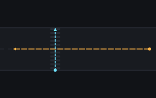 |
Older Adult Slow Start older-adult-slow-startAn older pedestrian waits 2 s at the kerb, then crosses at 0.85 m/s and is in the lane when a 5.5 m/s cyclist arrives. |
vulnerable | alert | 17.8 s | 1 adult, 1 bicycle |
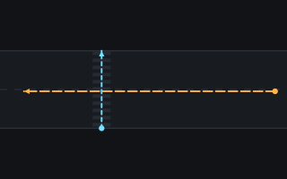 |
Wheelchair Mid-Crossing Pause wheelchair-mid-crossing-pauseA wheelchair user crossing at 1.1 m/s stops for 3 s in the middle of the road; a cyclist rides through the stopping point. |
vulnerable | alert | 15.3 s | 1 wheelchair, 1 bicycle |
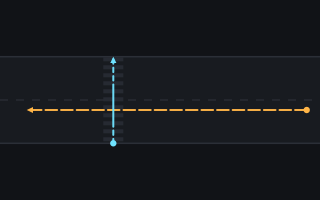 |
Child Darts Back child-darts-backA child halfway across turns and runs back at 2.5 m/s for a dropped toy, into the lane the cyclist had counted on being empty. |
vulnerable | alert | 19.0 s | 1 child, 1 bicycle |
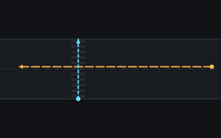 |
Guide Dog Pace guide-dog-paceA visually impaired pedestrian with a guide dog crosses at a steady 1.0 m/s and cannot see the approaching 6 m/s cyclist. |
vulnerable | alert | 13.5 s | 1 adult, 1 bicycle |
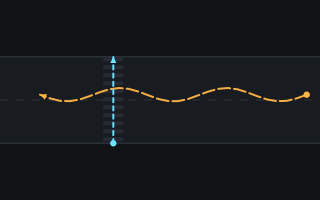 |
E-Scooter Weaving e-scooter-weavingAn e-scooter rider at 6 m/s weaves a metre either side of the lane line and reaches the crosswalk while a pedestrian is in it. |
micromobility | alert | 9.8 s | 1 adult, 1 escooter |
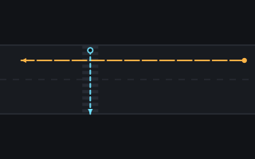 |
E-Bike In The Door Zone e-bike-in-the-door-zoneA fast e-bike at 10 m/s rides close to parked cars; a pedestrian steps out from between two of them a car length ahead. |
micromobility | alert | 10.3 s | 1 adult, 1 ebike |
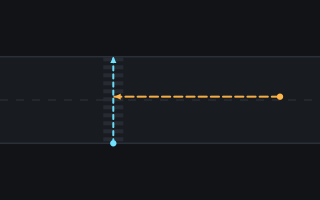 |
Cargo Bike Long Stop cargo-bike-long-stopA loaded cargo bike at 5 m/s brakes at only 1.5 m/s^2 and needs most of the approach to stop. It comes to rest on the crosswalk next to the pedestrian. |
micromobility | alert | 10.5 s | 1 adult, 1 cargo_bike |
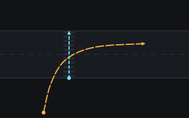 |
Delivery Rider Cuts Corner delivery-rider-cuts-cornerA delivery rider on an e-bike at 7 m/s cuts the corner from the cross street, diagonally through the crosswalk. |
micromobility | alert | 10.3 s | 1 adult, 1 ebike |
Hesitation At The Kerb hesitation-at-the-kerbA pedestrian steps off the kerb, stops for 1.5 s unsure of the cyclist, then goes anyway as the cyclist arrives. |
pedestrian-behaviour | alert | 11.1 s | 1 adult, 1 bicycle | |
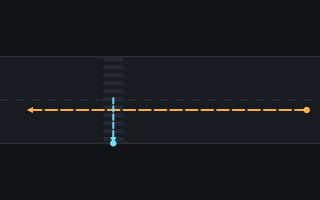 |
Turns Back Mid-Crossing turns-back-mid-crossingA pedestrian reaches the centre line, changes their mind and walks back towards the kerb they came from, into the cyclist's lane. |
pedestrian-behaviour | alert | 11.1 s | 1 adult, 1 bicycle |
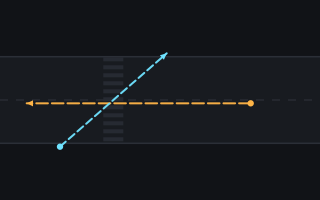 |
Diagonal Runner diagonal-runnerA runner crosses diagonally at 3.5 m/s, outside the crosswalk lines, and meets a 6 m/s cyclist in the lane. |
pedestrian-behaviour | alert | 6.6 s | 1 runner, 1 bicycle |
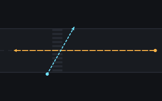 |
Phone-Distracted Diagonal phone-distracted-diagonalLooking at a phone, a pedestrian drifts diagonally across at 0.9 m/s and spends a long time in the lane. |
pedestrian-behaviour | alert | 18.4 s | 1 adult, 1 bicycle |
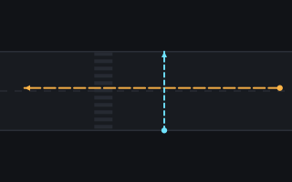 |
Mid-Block Crossing mid-block-crossingA pedestrian crosses 10 m upstream of the crosswalk, between gaps in traffic, and the cyclist meets them before reaching the marked crossing. |
pedestrian-behaviour | alert | 9.2 s | 1 adult, 1 bicycle |
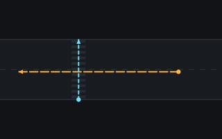 |
Passes In Front passes-in-frontThe cyclist crosses the pedestrian's line about a second before the pedestrian reaches it, a margin of a few metres. |
near-miss | alert | 9.8 s | 1 adult, 1 bicycle |
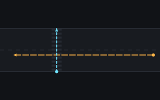 |
Passes Behind passes-behindThe cyclist rides through the crosswalk 2.5 m behind a pedestrian who has already crossed the lane. |
near-miss | warning | 10.7 s | 1 adult, 1 bicycle |
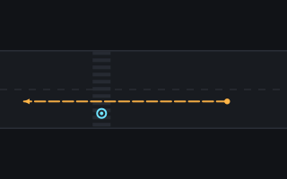 |
Tangential Pass tangential-passA cyclist passes 2 m to the side of a pedestrian standing at the edge of the lane, without changing course. |
near-miss | alert | 7.5 s | 1 adult, 1 bicycle |
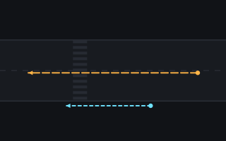 |
Parallel Never Converges parallel-never-convergesA cyclist rides along the road while a pedestrian walks the same way on the sidewalk 7 m to the side; the paths never meet. |
near-miss | warning | 13.4 s | 1 adult, 1 bicycle |
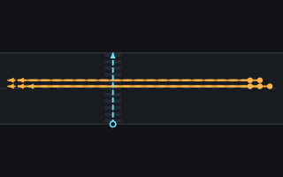 |
Green Wave Burst green-wave-burstFive cyclists waiting at a light set off together when it turns green and meet a pedestrian who started crossing late. |
signal-platoon | alert | 13.2 s | 1 adult, 5 bicycle |
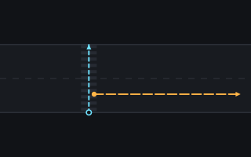 |
Far Lane Moving Away far-lane-moving-awayA cyclist just past the crosswalk rides away along the far lane while a pedestrian starts crossing behind them. |
negative | warning | 10.8 s | 1 adult, 1 bicycle |
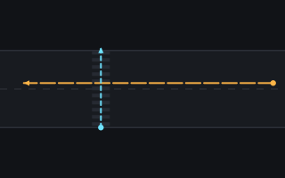 |
Fast Pass After Clearing fast-pass-after-clearingA road cyclist at 9 m/s goes through the crosswalk a second after the pedestrian has stepped onto the far kerb. |
negative | warning | 11.9 s | 1 adult, 1 road_bike |
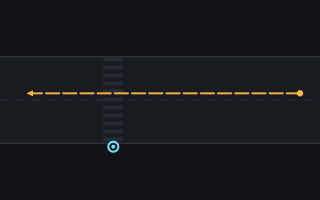 |
Waits At The Kerb waits-at-the-kerbA pedestrian stands on the kerb the whole time and never steps out while a cyclist passes at 7 m/s. |
negative | warning | 8.5 s | 1 adult, 1 bicycle |
stress¶
Eight dense scenes with 12 to 24 agents in view at once, for throughput and tracker-load testing. Positions and start times are jittered with fixed seeds, so the suite is the same on every run. Two of them carry known-hard.
$ python -m bikeped.scenarios evaluate --suite stress
...
sidewalk-tour-group 33.5 16 0.00 5.63 5.63 - alert warning NO
crosswalk-without-cyclists 21.8 24 0.00 0.00 0.00 - safe safe yes
...
8 scenarios, dominant state matches expected in 7; 4 of 7 danger intervals alerted no later than one frame after onset; false-alert time 8.37 s
| Scenario | Family | Expected | Duration | Agents | |
|---|---|---|---|---|---|
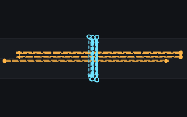 |
Rush Hour Crosswalk rush-hour-crosswalkTwelve pedestrians cross in both directions over 8 s while six cyclists ride through from both ends. |
dense | alert | 19.5 s | 12 adult, 6 bicycle |
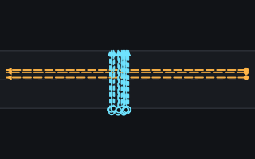 |
Stadium Exit stadium-exitTwenty people leave an event and flood the crosswalk in one direction as three cyclists arrive. |
dense | alert | 17.5 s | 20 adult, 3 bicycle |
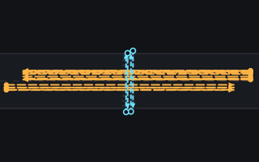 |
Bike Commute Peak bike-commute-peakSixteen cyclists in a steady stream at commuter speeds and four pedestrians picking their way across. |
dense | alert | 19.6 s | 4 adult, 16 bicycle |
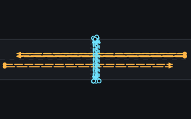 |
Wet Night Mixed Traffic wet-night-mixed-trafficTen pedestrians and eight riders on a wet night; some riders go as fast as e-bikes. |
dense | alert | 19.0 s | 10 adult, 8 bicycle |
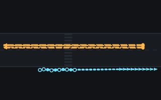 |
Sidewalk Tour Group sidewalk-tour-groupA tour group of ten walks along the sidewalk while six cyclists pass on the road; nobody crosses. |
dense | warning | 33.5 s | 10 adult, 6 bicycle |
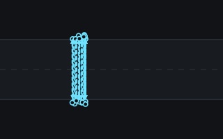 |
Crosswalk Without Cyclists crosswalk-without-cyclistsTwenty-four pedestrians cross in both directions and no cyclist appears. |
dense | safe | 21.8 s | 24 adult |
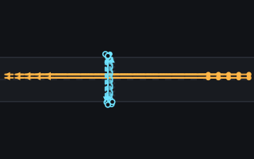 |
Group Ride Through Crowd group-ride-through-crowdA group ride of ten passes in two lines through a crosswalk with eight pedestrians on it. |
dense | alert | 15.5 s | 8 adult, 10 bicycle |
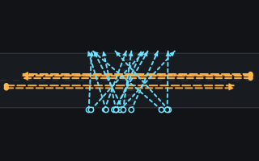 |
Market Day Shared Street market-day-shared-streetA shared street with fourteen pedestrians wandering across at random angles and six slow cyclists. |
dense | alert | 25.9 s | 14 adult, 6 bicycle |